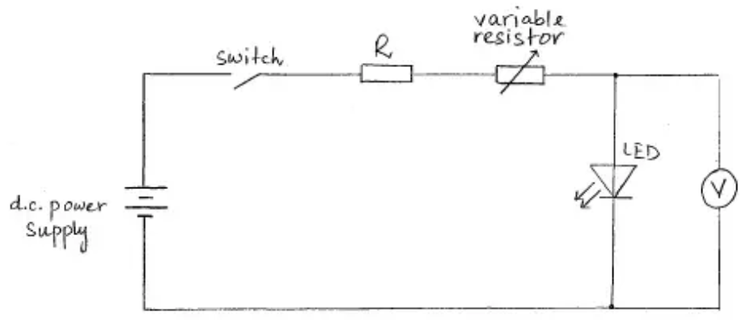
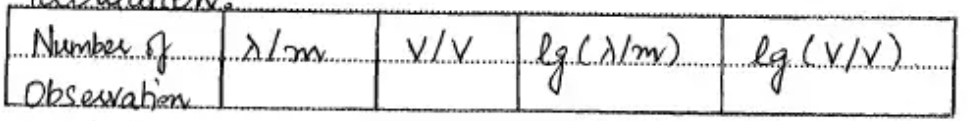

Question 1
A student is investigating the characteristics of different light-emitting diodes (LEDs).Figure shows examples of LEDs and the circuit symbol for an LED.
Each LED needs a minimum potential difference V across it to emit light. The student is investigating the relationship between V and the wavelength λ of the light emitted by the LED for several different LEDs.
It is suggested that the relationship is
V=kλn
where k and n are constants.
Design a laboratory equipment to test the relationship between V and λ.
Explain how your results could be used to determine values for k and n. You should draw a diagram showing the arrangement of your equipment . In your account you should pay particular attention to
- the procedure to be followed,
- the measurements to be taken,
- the control of variables,
- the analysis of the data,
- any safety precautions to be taken.
Total: 15 marks
Model Answer
Diagram:

Defining the problem:
Independent variable: wavelength λ
Dependent variable: potential difference V
Control variable: temperature
Procedure:
Connect variable resistor in series to change potential difference across LED. Keep the resistance of variable resistor to maximum value in the beginning. Slowly reduce the reistance
of variable resistor to increase the potential difference V across LED. Measure the value of potential difference V from voltmeter when LED just emits light. Record the wavelength of
light of given LED from its data sheet. Repeat the experiment for LEDs which emit light of different wavelength λ. Record the data in a table.

Analysis of data:
Plot a graph of lg(V/V) against lg(λ/m).
Graph would give straight line with gradient = n and y-intercept = lgK.
lgV = n lgλ + lgK
n = gradient
lgK = y-intercept
K = 10y-intercept
Safety precautions:
The major risk to equipment is damaging the LED with excessive current. Consider
how this risk can be reduced.
Wear safety gloves to avoid electric shock.
The focussed beam of certain LEDs can be damaging or irritating to the eyes. Do not
look directly at an LED at full intensity
Additional details:
1. Perform the experiment in dark room so that low intensity light is detected easily.
2. Repeat the experiment for same λ. Measure more values for V and take the average.
3. Use light detector to detect light when LED just emits.
4. Use protective resistor is series to prevent short circuits.